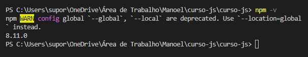
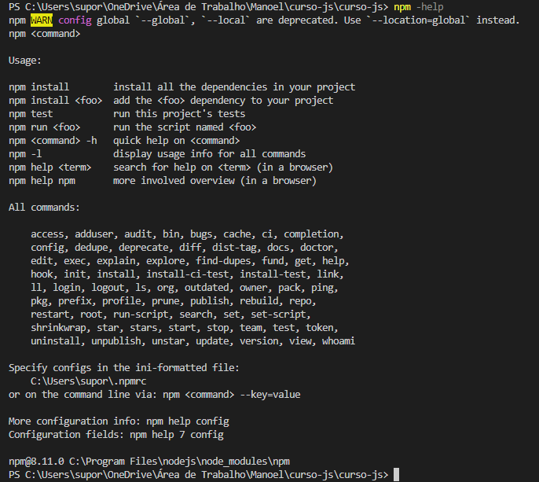
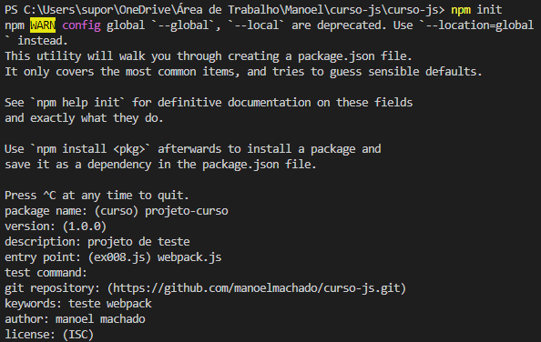
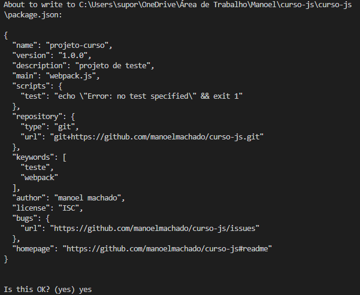
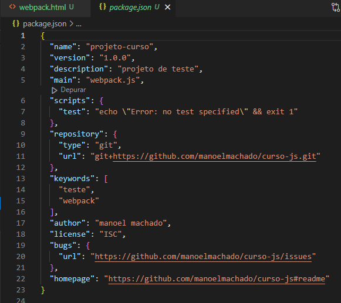
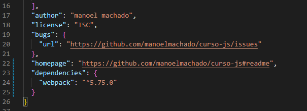
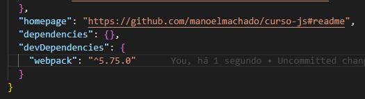

NPM é um acrônimo da palavra Node Package Manager, ou seja, um gerenciador de pacotes do Node.
O NPM já vem pre-instalado com o NodeJS, ele permite baixar pacotes e dependências de nossa aplicação na nuvem e também podemos navegar no diretório no endereço npmjs.com
A estrutura básica do NPM CLI será: npm <comando> [argumentos]
Para mais informações: documentação CLI.
Inicializando um projeto node:
Sempre que iniciarmos um projeto devemos passar o comando npm init, esse npm init nos dará uma série de passos para que possamos informar e criar o arquivo package.json que será o mapa da nossa aplicação contendo informações básicas como executar o nosso projeto e suas dependências.
O que é definido inicialmente com o npm init?
*esses dois itens são cruciais para identificar seu projeto.
Elas podem ser de produção ou de desenvolvimento:
Produção: por exemplo, pode ser um item que vai fazer um fallback para o seu JavaScript para ter funções para navegadores antigos.
Desenvolvimento: vão ser dependências necessárias para executar o desenvolvimento da sua aplicação como por exemplo ferramentas de testes.
Elas são separadas em dois objetos: "dependencies" e "devDependencies"; e esses itens serão armazenados por nome e versão.
Ao abrir o terminal, verificamos se temos o npm instalado cmo o comando npm -v
Utiliznado o comando npm -help, ele nos retornará uma lista com diversos comandos para ajuda. Se eu quiser ter um help de algum comando em específico, por exemplo o comando install, eu poderia utilizar npm install -h e ele mostraria uma lista completa de comandos de ajuda para instalação.
Criando nosso novo projeto, começamos com o comando já dito anteriormente npm init
Após digitar o comando, preenchemos a lista com as informações necessárias, como citadas acima, que nos retornará uma preview do arquivo package.json:
Caso esteja tudo correto, apenas digitamos yes e ele criará para nós o arquivo package.json com o mapa da nossa aplicação
Agora digamos que queremos nesse projeto incluir webpack, então podemos fazer a instalação do webpack: npm install webpack. Ele irá baixar todas as dependências e no final da instalação nos dará algumas informações como a criação do arquivo package-lock.json.
Esse package-lock.json servirá como um histórico da nossa aplicação, salvando todas as informações dos pacotes que foram instalados, versões que foram instaladas e vai fazer um lock em combinações específicas.
Os itens do webpack estarão na pasta node_modules que foi criada na instalação do webpack, contendo todos os pacotes precisa para funcionar - geralmente não é feito o upload essa pasta para um repositório, lembrando de deixar no gitignore.
Após feita a instalação, verificamos que temos a inclusão da dependencia webpack:
Nesse caso, o webpack está sendo apenas uma dependência de desenvolvimento, para isso é necessário mudar o caminho do webpack rodando o comando npm install webpack --save-dev
Vamos dizer agora que eu gostaria de instalar uma versão específica do webpack, utilizaremos o comando npm install webpack@*versão* --save-dev
Quando alguém faz o download de um projeto é necessário fazer a instalação do webpack do projeto, rodando o comando npm install.
Para atualizar o webpack para a sua ultima versão, podemos rodar o comando npm install npm@latest assim, pegamos a última versão do npm. Podemos adicionar também após o npm@latest o -g para instalar globalmente para a máquina, se caso for necessário utilizar o webpack em vários projetos.